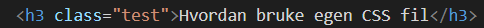
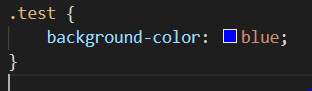

Hva er CSS
CSS er styling
CSS syntax
Syntax til CSS
Hvordan bruke egen CSS fil

- Bruk <link> taggen for å linke til en CSS fil, rel="stylesheet" for å si at det er en CSS fil href for å si hvilken fil den skal bruke
Hvordan bruke CSS
Hvordan sette attributter til tags

- Sånn legger du til bakgrunnsfarger på alle h1 tagger
Classes
- 
- eksempel på hvordan du setter en class på en tag, den skal være i åpning taggen
- 
- Du kan sette attributter til en class som du kan sette på en tag. for å bruke class må du legge . først eks. classen test blir .test
Nyttige attributter
| attributter | Beskrivelse | eksempel |
|---|---|---|
| color | Fargen på elementet | color: red; |
| background-color | bakgrunds Fargen på elementet | background-color: red; |
| width | Setter breden på elementet | width: 10px; |